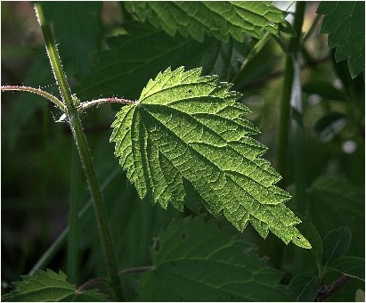

|

Многолетнее двудомное растение с ползучим корневищем желтой окраски. Гемикриптофит. Стебель прямостоячий, обычно простой,
четырехгранный, покрытый щетинками и жгучими волосками. Листья черешковые, супротивные, яйцевидные или продолговатые, длиннозаостренные,
с сердцевидным или округлым основанием, по краю крупнопильчатые. Прилистники свободные, линейно-ланцетные, заостренные.
Соцветие — колос, мужские соцветия прямостоячие, женские на более длинных цветоносах, во время цветения поникшие.
Цветки с зеленым околоцветником, опушенные щетинистыми, жгучими волосками. Плод — орешек, заключенный в видоизмененный околоцветник.
Растет в местах, богатых азотом, на каменистых осыпях, в лесах, прибрежных зарослях, на развалинах, в канавах, как сорное.
Фотограф: Виталий Гуменок |